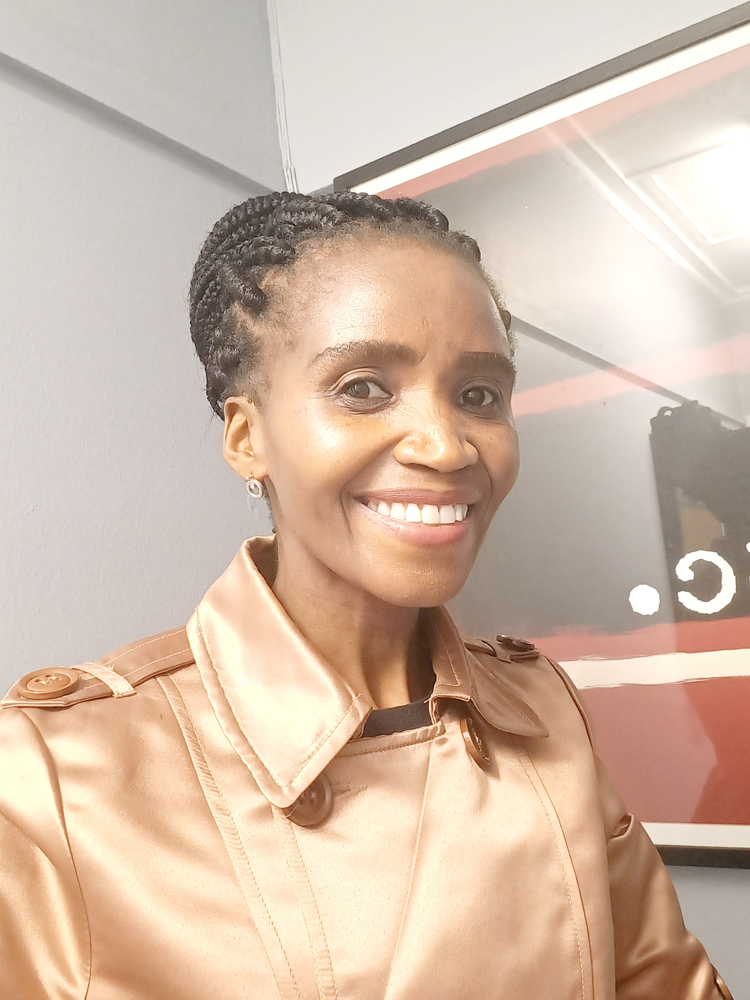

Portia Kubheka is a qualified Social Worker and Therapist. She holds a Bachelor of Social Work degree from UNISA where she majored in Psychology, and a Certificate in Employee Wellness from the University of Pretoria.
Portia attends professional training regularly to deepen her knowledge and better support employees in managing stress, anxiety and depression effectively.
She has over 10 years experience serving people from diverse cultures and backgrounds.

Portia worked for the Open Door Crisis Care Centre for seven years (2016–2023) where she gained extensive experience in psychosocial counselling and trauma support.
In August 2023 she launched her private practice ISA61 LIFE WELLNESS, operating from:
Union Main Wellness 45 Josiah Gumede Road Pinetown
Portia provides:
She is affiliated with:


“To empower Victims to be Victorious.”